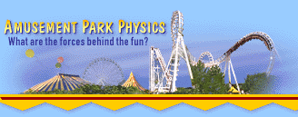
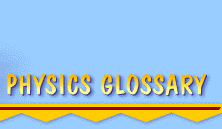

Welcome to the
Physics Glossary. Here you will find many different
terms used in Physics.
Acceleration
Objects that are changing their speed or their direction are said to be accelerating.
The rate at which the speed or direction changes is referred to as acceleration.
Some amusement park rides (such as roller coasters) are characterized by rapid
changes in speed and or direction. These rides have large accelerations. Rides
such as the carousel result in small accelerations; the speed and direction
of the riders change gradually.
Balanced And Unbalanced Forces
A balanced force results whenever two or more forces act upon an object in
such a way as to exactly counteract each other. As you sit in your seat at
this moment, the seat pushes upward with a force equal in strength and opposite
in direction to the force of gravity. These two forces are said to balance
each other, causing you to remain at rest. If the seat is suddenly pulled
out from under you, then you experience an unbalanced force. There is no longer
an upward seat force to balance the downward pull of gravity, so you accelerate
to the ground.
Centripetal force
Motion along a curve or through a circle is always caused by a centripetal
force. This is a force that pushes an object in an inward direction. The moon
orbits the earth in a circular motion because a force of gravity pulls on
the moon in an inward direction toward the center of its orbit. In a roller
coaster loop, riders are pushed inwards toward the center of the loop by forces
resulting from the car seat (at the loop's bottom) and by gravity (at the
loop's top).
Energy
Energy comes in many forms. The two most important forms for amusement park
rides are kinetic energy and potential energy. In the absence of external
forces such as air resistance and friction (two of many), the total amount
of an object's energy remains constant. On a coaster ride, energy is rapidly
transformed from potential energy to kinetic energy when falling and from
kinetic energy to potential energy when rising. Yet the total amount of energy
remains constant.
Force
A force is a push or a pull acting upon an object. Forces result from interactions
between two objects. Most interactions involve contact. If you hit the wall,
the wall hits you back. The contact interaction between your hand and the
wall results in a mutual push upon both objects. The wall becomes nicked (if
hit hard enough) and your hand hurts. Bumper cars experience mutual forces
acting between them due to contact during a collision. Some forces can act
from a distance without actual contact between the two interacting objects.
Gravity is one such force. On a free fall ride, there is a force of gravitational
attraction between the Earth and your body even though the Earth and your
body are not in contact.
Friction
Friction is a force that resists the motion of an object. Friction results
from the close interaction between two surfaces that are sliding across each
other. When you slam on your brakes and your car skids to a stop with locked
wheels, it is the force of friction that brings it to a stop. Friction resists
the car's motion.
G
A g is a unit of acceleration equal to the acceleration caused by gravity.
Gravity causes free-falling objects on the Earth to change their speeds at
rates of about 10 m/s each second. That would be equivalent to a change in
speed of 32 ft/s in each consecutive second. If an object is said to experience
3 g's of acceleration, then the object is changing its speed at a rate of
about 30 m/s every second.
Gravitational Force
Any two objects with mass attract each other with a type of force known as
a gravitational force. The strength of this force depends upon the mass of
the two objects and the distance between them. For objects with masses as
large as the earth and the sun, these forces are sizeable and have tremendous
influence upon the subsequent motion. For objects such as two persons sitting
in a theater, the force of gravitational attraction is so small that it is
insignificant. In order for such persons to increase the force of attraction
between them, they must add to their mass (maybe by eating more popcorn).
Objects on the earth experience noticeable attractions with the earth due
to the earth's large mass.
Inertia
Inertia is a tendency of an object to resist change in its state of motion.
More massive objects have more inertia; that is, they have more tendency to
resist changes in the way they are moving. An elephant has a lot of inertia,
for example. If it is at rest, it offers a large resistance to changes in
its state of rest, and so it's difficult to move an elephant. On the other
hand, a pencil has a small amount of inertia. It's easy to move a pencil from
its state of rest. More massive objects have more inertia and thus require
more force in order to change their state of motion.
Kinetic energy
Kinetic energy is the energy possessed by an object because of its motion.
All moving objects have kinetic energy. The amount of kinetic energy depends
upon the mass and speed of the object. A roller coaster car has a lot of kinetic
energy if it is moving fast and has a lot of mass. In general, the kinetic
energy of a roller coaster rider is at a maximum when the rider reaches a
minimum height.
Mass
The mass of an object is a measurement of the amount of material in a substance.
Mass refers to how much "stuff" is there. Elephants are very massive, since
they contain a lot of "stuff."
Momentum
Momentum pertains to the quantity of motion that an object possesses. Any
mass that is in motion has momentum. In fact, momentum depends upon mass and
velocity, or in other words, the amount of "stuff" that is moving and how
fast the "stuff" is moving. A train of roller coaster cars moving at a high
speed has a lot of momentum. A tennis ball moving at a high speed has less
momentum. And the building you are in, despite its large mass, has no momentum
since it is at rest.
Newton's First Law of Motion
An object at rest or in uniform motion in a straight line will remain at rest
or in the same uniform motion unless acted upon by an unbalanced force. This
is also known as the law of inertia.
Newton's Second Law of Motion
The acceleration of an object is directly proportional to the total unbalanced
force exerted on the object, and is inversely proportional to the mass of
the object (in other words, as mass increases, the acceleration has to decrease).
The acceleration of an object moves in the same direction as the total force.
This is also known as the law of acceleration.
Newton's Third Law of Motion
If one object exerts a force on a second object, the second object exerts
a force equal in magnitude and opposite in direction on the object body. This
is also known as the law of interaction.
Period
A motion that repeats itself in cyclic fashion is said to be periodic. The
time for one complete cycle is known as the period of the motion. The motion
of a second hand has a period of 60 seconds. The periodic rotation of the
earth about its axis is 24 hours. The periodic motion of an amusement park
pendulum ride may have a period as high as 10 or 15 seconds.
Potential energy
Potential energy is the energy possessed by an object because of its height
above the ground. The amount of potential energy possessed by an object depends
on its mass and its height. A roller coaster car is initially hauled by a
motor and chain system to the top of a tall hill, giving it a large quantity
of potential energy.
Speed
Speed is a measurement of how fast an object is moving. Fast-moving objects
can cover large distances in a small amount of time. They are said to have
a high speed. A roller coaster car moving at 60 miles per hour would be able
to cover a distance of 60 miles in one hour if it could maintain this pace.
Velocity
The velocity of an object refers to the speed and direction in which it moves.
If you drive north to your work place and your speedometer reads 35 miles
per hour, then your velocity is 35 miles per hour in a northward direction.
Velocity is speed with a direction and is important in understanding bumper
car collisions.
Weight
Weight is a measurement of the gravitational force acting on an object. The
weight of an object is expressed in pounds in the U.S. A 180-pound person
is experiencing a force of gravitational attraction to the earth equal to
180 pounds.
Weightlessness
Amusement park rides often produce sensations of weightlessness. These sensations
result when riders no longer feel an external force acting upon their bodies.
At the top of the tower of a free-fall ride, a 100-pound rider would feel
100 pounds of force from the seat pushing as an external force upon her body.
The rider feels her normal weight. Yet, as she falls from the tower, the seat
has fallen out from under her. She no longer feels the external force of the
seat and subsequently has a brief sensation of weightlessness. She has not
lost any weight, but feels as though she has because of the absence of the
seat force. In this context, weightlessness is a sensation and not an actual
change in weight.